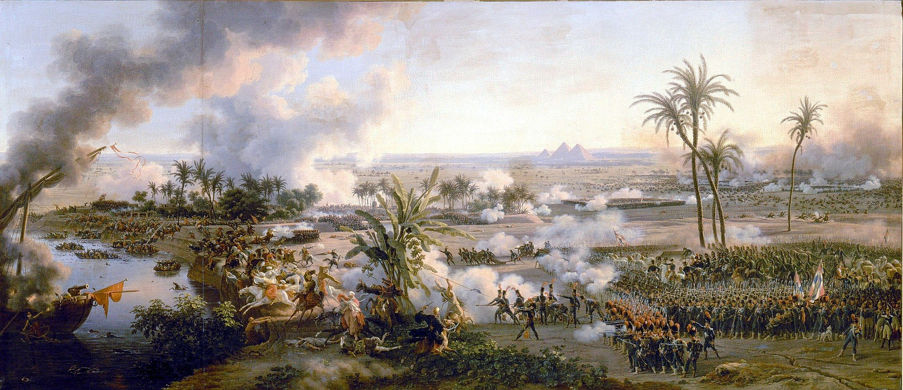

Napoleon's Egyptian Campaign
The campaign that brought the Great Powers to Egypt's ancient land.

Napoleon in The Battle of the Pyramids by Louis-François Lejeune
A Timeline of Napoleon's Egyptian Campaign
- June 10, 1798: Napoleon's fleet disembarks his army to invade Malta after their refusal to allow his entire fleet into their harbor.
- June 19, 1798: With successful occupation and new policies implemented, Napoleon leaves Malta for Egypt.
- July 1, 1798: Napoleon begins the Egyptian Campaign by landing at Alexandria, the former city founded by Alexander the Great.
- July 21, 1798: On the march to Cairo, the Battle of the Pyramids commenced with the French victorious against the ruling Mamluks.
- August 1, 1798: The Battle of the Nile commenced between the numerous vessels of French and British ships, ending in the destruction of the French fleet and cutting off Napoleon's forces from the sea.
- October 21, 1798: The citizens of Cairo revolt against Napoleon despite his efforts to secure the region as his ally.
- July 15, 1799: The Rosetta Stone was discovered by Pierre-François Bouchard, a French lieutenant near Fort Julien.
- March 3, 1799: Napoleon engaged the Ottoman city of Jaffa in a siege and won by March 7, but a plague later decimated some of his army.
- March 20, 1799: Napoleon began his prolonged siege on the city of Acre but experienced fierce resistance.
- April 16, 1799: The Ottoman city of Mount Tabor capitulated to Napoleon's forces
- May 21, 1799: After returning to continue the siege of Acre with heavy casualties, Napoleon lifted the siege to return to Cairo.
- January 22, 1799: Determined to defeat the French invaders, the Mamluks fought vigorously but ultimately lost and retreated as the French pursued them.
- July 25, 1799: Napoleon defeats the Ottomans in the Battle of Abukir.
- August, 1799: Foreseeing that the French position in Egypt would not last, Napoleon retreated to France and left behind thousands of men who would lose to the combined British-Ottoman assault by 1801.